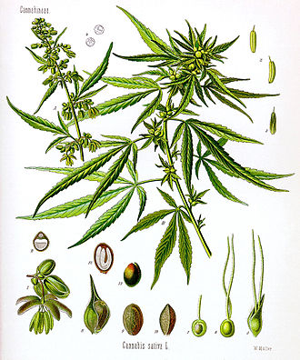

Cannabis

Cannabis (/ˈkænəbɪs/)[2] is a genus of flowering plants
in the family Cannabaceae that is widely accepted as
being indigenous to and originating from the continent
of Asia.[3][4][5] However, the number of species is
disputed, with as many as three species being
recognized: Cannabis sativa, C. indica, and
C. ruderalis. Alternatively, C. ruderalis may be included
within C. sativa, or all three may be treated as
subspecies of C. sativa,[1][6][7][8] or C. sativa may be
accepted as a single undivided species.[9]
The plant is also known as hemp, although this term is
usually used to refer only to varieties cultivated for non-drug
use. Hemp has long been used for fibre, seeds
and their oils, leaves for use as vegetables, and juice.
Industrial hemp textile products are made from
cannabis plants selected to produce an abundance of
fibre.
Cannabis also has a long history of being used for
medicinal purposes, and as a recreational drug known
by several slang terms, such as marijuana, pot or
weed. Various cannabis strains have been bred, often
selectively to produce high or low levels of
tetrahydrocannabinol (THC), a cannabinoid and the
plant's principal psychoactive constituent. Compounds
such as hashish and hash oil are extracted from the
plant.[10] More recently, there has been interest in other
cannabinoids like cannabidiol (CBD), cannabigerol (CBG), and cannabinol
(CBN).